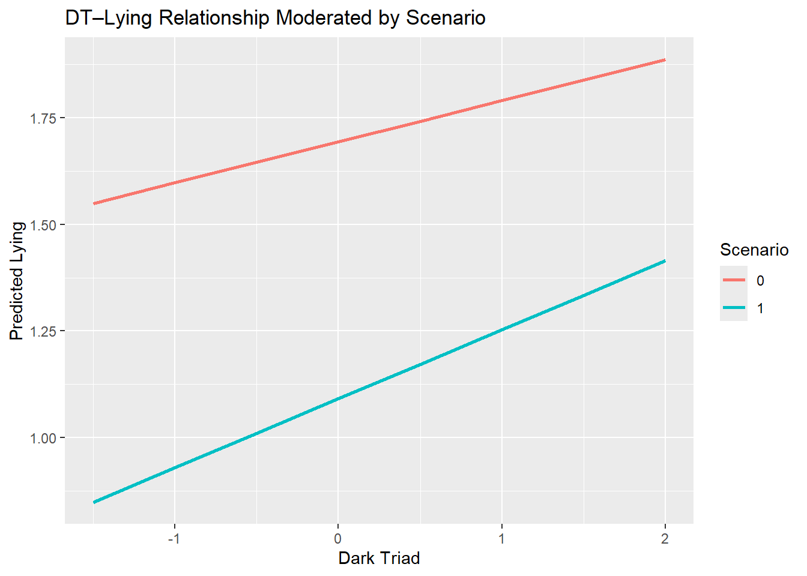
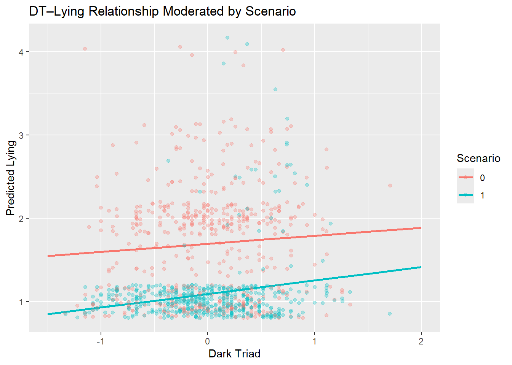
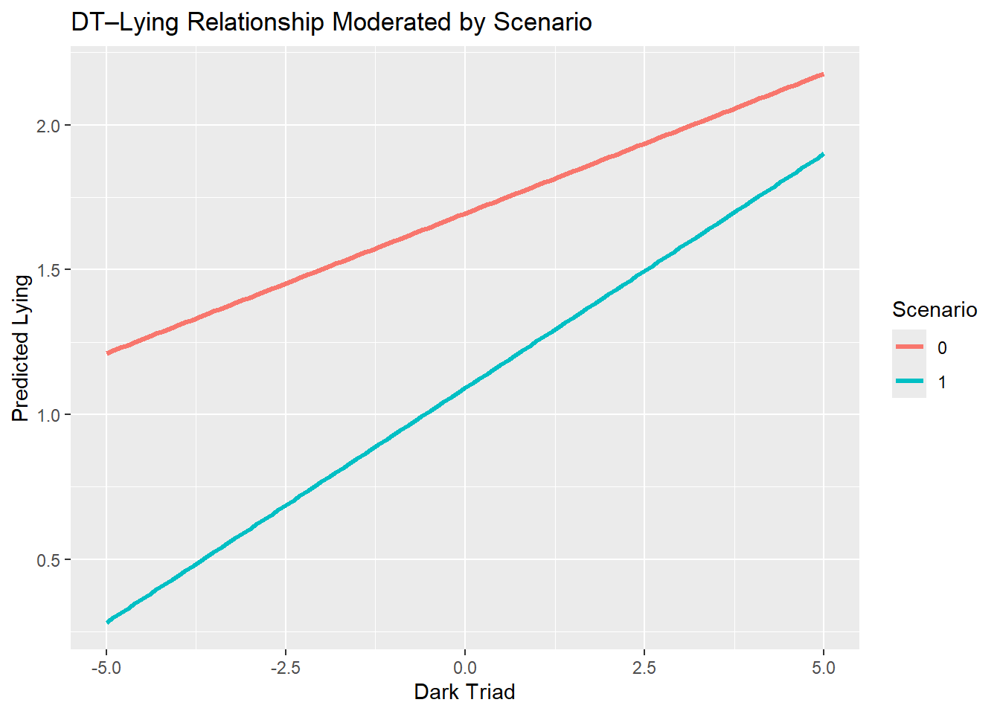
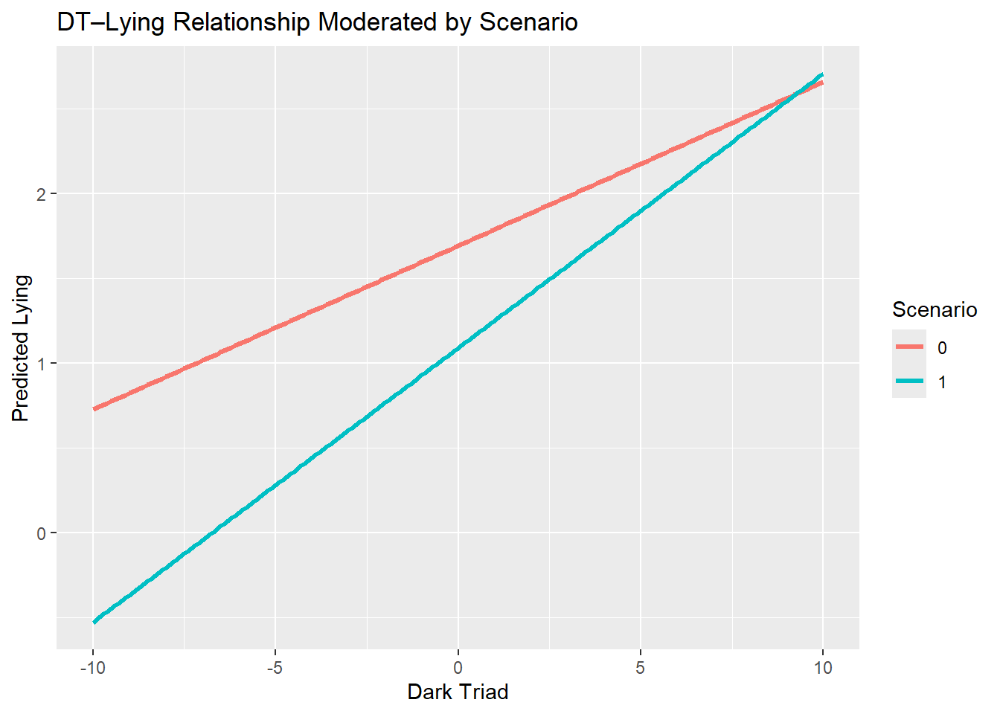

For my thesis, I conducted a multi-level moderation. I originally did all of my anaylses in SPSS. However, I could not graph it correctly in SPSS. The goal here is to attempt (I am unsure of the success of this venture) to run this analysis and graph it in R.
library(haven)
library(tidyr)
library(tidyverse)## ── Attaching core tidyverse packages ──────────────────────── tidyverse 2.0.0 ──
## ✔ dplyr 1.1.4 ✔ purrr 1.0.4
## ✔ forcats 1.0.0 ✔ readr 2.1.5
## ✔ ggplot2 3.5.2 ✔ stringr 1.5.1
## ✔ lubridate 1.9.4 ✔ tibble 3.2.1
## ── Conflicts ────────────────────────────────────────── tidyverse_conflicts() ──
## ✖ dplyr::filter() masks stats::filter()
## ✖ dplyr::lag() masks stats::lag()
## ℹ Use the conflicted package (<http://conflicted.r-lib.org/>) to force all conflicts to become errorsThesisMod <- read_spss("C:/Users/crawl/OneDrive - Wake Forest University/GitHub/Portfolio/DT Lie Scenario Data.sav")library(lme4)## Loading required package: Matrix##
## Attaching package: 'Matrix'## The following objects are masked from 'package:tidyr':
##
## expand, pack, unpacklibrary(lmerTest)##
## Attaching package: 'lmerTest'## The following object is masked from 'package:lme4':
##
## lmer## The following object is masked from 'package:stats':
##
## stepmodel <- lmer(LieAvg ~ DTTotalC * Scenario
+ (1 | Person), data = ThesisMod)
summary(model)## Linear mixed model fit by REML. t-tests use Satterthwaite's method [
## lmerModLmerTest]
## Formula: LieAvg ~ DTTotalC * Scenario + (1 | Person)
## Data: ThesisMod
##
## REML criterion at convergence: 1639.8
##
## Scaled residuals:
## Min 1Q Median 3Q Max
## -1.6111 -0.3901 -0.1134 0.5007 5.0869
##
## Random effects:
## Groups Name Variance Std.Dev.
## Person (Intercept) 0.03457 0.1859
## Residual 0.25517 0.5051
## Number of obs: 1020, groups: Person, 510
##
## Fixed effects:
## Estimate Std. Error df t value Pr(>|t|)
## (Intercept) 1.69412 0.02384 1001.73948 71.076 <2e-16 ***
## DTTotalC 0.09662 0.04578 1001.73948 2.110 0.0351 *
## Scenario -0.60294 0.03163 507.99998 -19.060 <2e-16 ***
## DTTotalC:Scenario 0.06523 0.06076 507.99998 1.073 0.2836
## ---
## Signif. codes: 0 '***' 0.001 '**' 0.01 '*' 0.05 '.' 0.1 ' ' 1
##
## Correlation of Fixed Effects:
## (Intr) DTTtlC Scenar
## DTTotalC 0.000
## Scenario -0.664 0.000
## DTTtlC:Scnr 0.000 -0.664 0.000I got the same results in SPSS for my thesis! That was expected, now I would like to graph this… which would have come in handy weeks ago, but we were limited on time.
library(ggeffects)
library(ggplot2)# Generate predicted values from model
pred <- ggpredict(model, terms = c("DTTotalC", "Scenario"))ggplot(pred, aes(x = x, y = predicted, color = group)) +
geom_line(size = 1) +
labs(x = "Dark Triad",
y = "Predicted Lying",
color = "Scenario",
fill = "Scenario",
title = "DT–Lying Relationship Moderated by Scenario")## Warning: Using `size` aesthetic for lines was deprecated in ggplot2 3.4.0.
## ℹ Please use `linewidth` instead.
## This warning is displayed once every 8 hours.
## Call `lifecycle::last_lifecycle_warnings()` to see where this warning was
## generated. These lines look to be relatively parallel, though not perfect. I am curious as to if a sample had very high levels of DT traits if this moderation would be different.
Here is my data mapped on to the prediciton lines.
ggplot(pred, aes(x = x, y = predicted, color = group)) +
geom_line(size = 1) +
geom_jitter(data = ThesisMod, aes(x = DTTotalC, y = LieAvg, color = as.factor(Scenario)),
alpha = 0.3, size = 1.5, inherit.aes = FALSE) +
labs(x = "Dark Triad",
y = "Predicted Lying",
color = "Scenario",
fill = "Scenario",
title = "DT–Lying Relationship Moderated by Scenario") It appears that there is more variability in lying in the romantic partner scenario (0) which is what I saw in my box and wisker plot in my thesis!
pred1 <- ggpredict(model, terms = c("DTTotalC [-5:5 by=0.1]", "Scenario"))
ggplot(pred1, aes(x = x, y = predicted, color = group)) +
geom_line(size = 1.2) +
labs(x = "Dark Triad",
y = "Predicted Lying",
color = "Scenario",
title = "DT–Lying Relationship Moderated by Scenario") 
It certainly seems that at higher levels of the DT traits - there is convergence between the lines…
pred2 <- ggpredict(model, terms = c("DTTotalC [-10:10 by=0.1]", "Scenario"))
ggplot(pred2, aes(x = x, y = predicted, color = group)) +
geom_line(size = 1.2) +
labs(x = "Dark Triad",
y = "Predicted Lying",
color = "Scenario",
title = "DT–Lying Relationship Moderated by Scenario") 
Aroung a DT score of 8.5 there is an interaction of scenario… too bad that my scale is only 1-5 :(